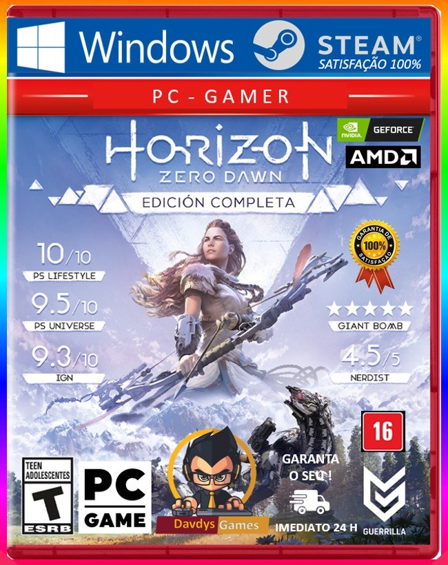

JGS Torrensts


Horizon Zero Dawn Complete Edition
Requisitos Mínimos Requires a 64-bit processor and operating system OS: Windows 10 64-bits Processor: Intel Core or AMD FX Memory: 8 GB RAM Graphics: Nvidia GeForce GTX 780 (3 GB) or AMD Radeon R9 290 (4GB) DirectX: Version 12 Storage: 100 GB available space
Experimente toda a busca lendária de Aloy para desvendar os mistérios de um mundo governado por máquinas mortais. Pária de sua tribo, a jovem caçadora luta para descobrir seu passado, descobrir seu destino … e impedir uma ameaça catastrófica ao futuro.